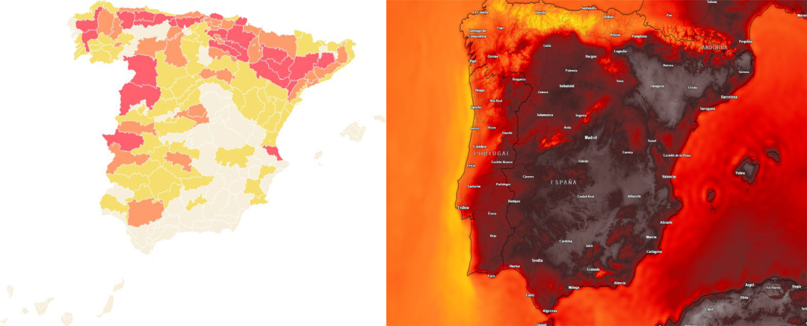

What do we have?
Session 1 · Professional Foundations
From Raw Data to Insight
Data has no business value merely because it exists. Its value appears when it helps someone understand something and make a better decision.
Today we learn how raw data becomes action.
What does it mean?
What are we trying to understand?
How should we represent it?
What have we learned?
What should we do?
What happens next?
0% complete
Today's Journey · Approx. 2 hours
One story. Seven ways of thinking.
Throughout the session, we will move through seven different modes, from understanding raw data to making a decision.
The timeline tells you when.
The seven modes tell you how we are thinking.
Open
Understand
Contextualise
Question
See
Critique
Apply
- 00:00OPENStart with ambiguityInteractive opening
- 00:10UNDERSTANDData -> insightConcept + classification
- 00:28CONTEXTCompared with what?Reasoning in chat
- 00:42QUESTIONBusiness questionScenario framing
- 00:56ALIGNMatch analysis to questionA/B/C decisions
- 01:08SEEVisual attentionEncoding + cognitive load
- 01:34CRITIQUEColour and perceptionVisual discussion
- 01:42EXPLORETableau Public5-minute exploration
- 01:52APPLYSport business caseKPI hypotheses
- 02:14KAHOOTFinal challengeSession wrap-up
S01-00 · Opening
The number that means nothing
We start with ambiguity. No definitions yet.
Raw number
18,742
Drop it in the chat
What does this tell us?
Write one word or one short sentence. Do not overthink it.A number. It exists, but it does not explain anything.
Now we know what the number describes.
Now we have time and event context.
Now comparison begins to create meaning.
Now the data can influence a decision.
Why a recurring case?
Good data visualisation is rarely about isolated charts. It is about helping real people answer real questions and make better decisions. So today we will keep returning to the same fictional sport organisation.
Teaching case · All figures are illustrative
Meet Northside FC
Northside FC has a familiar problem: they have more data than ever, but management still struggles to answer simple business questions.
Throughout the session, we will use the club to see how the same data can produce very different answers depending on context, audience and decision.
Ticketing
Attendance
Fan behaviour
Marketing
Revenue
Sponsorship
Digital engagement
S01-01 · From data to insight
What actually creates meaning?
Data becomes useful when it helps someone understand a situation, make a decision and act differently.
From the opening
We added meaning to a number step by step. Now we need to separate two ideas: where analysis is trying to go, and what helps us get there.
Analytical value chain
How raw data becomes useful for a business
This model is a progression. It shows the journey from raw evidence to something the organisation can actually do.
Raw facts, values, events or records.
Attendance = 42,500Data organised with enough context to describe the situation.
42,500 attended Saturday's home match.An interpretation that explains something meaningful.
Unusually low for a weekend league fixture despite a major promotion.A choice informed by that interpretation.
Review whether the promotion reached the intended fan segment.What the organisation actually does next.
Change targeting for the next comparable fixture.
Data is not the destination.
The value appears when data helps us understand something and ultimately supports a decision or action.
"42,500 people attended." Useful? Maybe. But compared with what?
Data → Information → Insight → Decision → Action
Data, context, question, audience, purpose, visual encoding and comparison.
Meaning model
So how do we move from data to insight?
42,500 is data. To interpret it, we need to know what we are trying to answer, who needs the answer, what decision they face and what comparison makes the number meaningful.
Click any element to see what it contributes. No single element creates meaning alone.
Data
The evidence we start from: records, counts, logs, measurements or responses.
Context
What the number refers to, when it happened and what situation surrounds it.
Question
The problem we are trying to understand, not just the field we want to plot.
Audience
The people who need the answer and the level of detail they can act on.
Meaningwhat the audience can understand and use
Purpose
The reason the analysis exists: explore, explain, monitor, persuade or decide.
Visual Encoding
The design choices that help us see and communicate patterns, differences and relationships. Encoding supports insight; it does not magically create it.
Comparison
The benchmark, target, segment or time period that helps us judge significance.
The starting evidence.
These help us judge what the evidence means.
These determine which insight actually matters.
This helps people see and understand the pattern clearly.
The analysis becomes useful when it changes what happens next.
From seeing to understanding
Meaning helps us interpret data, but there is another trap. We often describe what we see and call it an insight. Describing the chart is not the same as interpreting it.
Observation is not the same as insight
Imagine you show management a chart and say: "Attendance fell 12%." That may be correct. But management can already see that. The next question will be: So what?
Observation ≠ Insight. An observation describes what happened. An insight explains why it matters or what might be causing it. A decision turns that understanding into a possible action.
The value being measured.
What happened?
Why does it matter, or what might explain it?
What might we do?
Notice what just happened
We needed data, context, comparison, a question, an audience and a purpose before we could move beyond "Attendance = 42,500" towards something useful.
Quick challenge — classify the statement
Commit to an answer before revealing the reasoning.
"Ticket revenue increased 8%."
Follow-up · chat
What would you need to turn that observation into an insight? Possible directions include context, comparison, segment detail, a business question or the audience's decision.
S01-02 · Context and comparison
Compared with what?
A number alone is rarely informative. Meaning often comes from comparison.
Next step
We have just seen that "Attendance fell 12%" is still only useful because it compares attendance with something else. Before interpreting any metric, ask one question: compared with what?
A campaign generated 2.4 million impressions
Is that good?
Campaign reach
2.4M
Impressions. Same number. Different reference point. Different meaning.
Previous campaign: 1.6M. Current: 2.4M.
Target: 3.0M. Actual: 2.4M.
League campaign benchmark: 1.9M.
Existing fans: 2.1M. New audiences: 0.3M.
Comparable derby expectation: 2.8M.
Same number. Different meaning.
Use when the question is about change over time.
Use when the question is about performance against an objective.
Use when the question is about relative performance.
Use when the overall number may be hiding different behaviour.
Use when the question is about surprise under known conditions.
Which comparison should I use?
The business question determines the useful comparison. Do not compare against everything just because you can.
Let's prove it with one number — 85%
85%
Good result or bad result?
Choose first. Then we will reveal what changes when the context changes.
Stadium occupancy
85%How would you interpret this?
Customer churn
85%How would you interpret this?
Forecast accuracy
85%Is this necessarily good?
Pass completion
85%Is this enough to judge player performance?
It was always 85%.
Context, question, audience, purpose, comparison and expected value changed.
The number did not create the meaning. The context did.
S01-03 · Business questions
Do not start with the chart
Why this comes now
Comparison helps, but comparison against what? That depends on the business question. If you do not know the question, there is no correct chart.
Management message
“Average attendance is down 8% this season. Should we be worried?”
This is a business concern. It is not enough information to choose a chart.
Attendance is down 8%.
What exactly worries management?
Which fields can test the concern?
Against what reference?
Only now choose the visual.
What should management understand?
Down compared with what?
All matches or certain segments?
Financially important?
Concentrated on weekdays?
Has pricing changed?
Has competition mix changed?
Quick decision — what would you do first?
Commit before the reveal. This is where we apply the Meaning Model before opening Tableau.
Question first. Chart second.
Reusable framework
Business Question Canvas
The Business Question Canvas turns a vague concern into an analytical route. Use it before you build.
Mini visual evidence
Weekday attendance is pulling the average down
The chart is not the starting point. It appears after the question, audience, decision and comparison are clear.
You should be able to answer these questions before choosing your final chart.
What are we actually trying to understand?
Who needs the answer?
What could they do differently?
What do we need to compare or understand?
What evidence might help?
How should we communicate the answer?
S01-04 · Audience and decisions
Choose the analysis that matches the question
Different views answer different questions. The right analysis is the one that supports the decision, not the one that looks most impressive.
Question -> audience
We know what question to ask. Now we need evidence that actually answers it.
Imagine Northside FC has one shared dataset. Now look at what different people inside the organisation actually need from it.
Northside FC attendance data
Choose the audience. Notice how the question changes.
CEO
Focus: overall business performance.
Likely question: Are revenues and attendance moving in the right direction?
Decision: Where should we prioritise investment?
Commercial Director
Focus: revenue generation.
Likely question: Which fixtures and fan segments generate the most value?
Decision: Pricing, packaging and promotions.
Marketing Team
Focus: acquisition and retention.
Likely question: Which fans are not returning?
Decision: Who should we target and with what message?
Operations Team
Focus: matchday experience and capacity.
Likely question: When do entrances, staffing and food and beverage areas come under pressure?
Decision: Staffing, queue management and service planning.
Sponsor
Focus: relevant exposure and campaign value.
Likely question: Does the audience reached match the campaign objective?
Decision: Activation, renewal and reporting priorities.
Make the call — A, B or C?
Choose the analysis that best fits the question. Then reveal the reasoning.
The question
“The Commercial Director wants to understand why weekday attendance is falling.”
Which analysis would you start with?
Second call — when KPIs move in different directions
The question
“Ticket revenue increased, but attendance declined. What would you investigate next?”
Question → analysis alignment.
S01-05 · Seeing
Design directs attention
Humans do not read every visual element one by one. Some properties attract attention almost immediately.
Decision -> visualisation
Choosing the right analysis is only half the job. Now we need to make sure the viewer notices the right thing.
Which one did you notice first?
Colour, position, length, size and orientation can guide attention before we consciously read the chart.
Position
Length
Size
Colour
Orientation
Visual encoding
How design tells the viewer what to compare
For precise quantitative comparison, some encodings are generally easier to read than others. This is a guide, not an absolute law.
Generally easier for precise comparison
Position → Length → Angle / Slope → Area / Size → Colour intensity
We judge location along a shared axis very accurately.
Bar length is strong for comparing weekday and weekend attendance.
Bubbles can show pattern or clustering, but area is harder to compare precisely.
Colour can guide attention, but too many colours compete with each other.
Slope or arrows can show direction; rotated text can increase effort.
Encoding challenge
You need executives to compare revenue across five competitions precisely. Which encoding would you prefer?
Cognitive load: what competes for attention?
Visual encoding tells the viewer what to notice. But if everything is trying to get attention, nothing wins.
Colour
Labels
Icons
Borders
Gridlines
Titles
Annotations
Legends
Filters
Decoration
Many colours, heavy grid, unclear priority.
Muted context, one highlight, less effort.
Reveal design reasoning
The data may be identical, but the second version controls attention. It uses fewer colours, lighter gridlines, a clearer title, less decoration, one main highlight and lower label density.
S01-06 · Communicating
Exploratory and explanatory thinking
The same tool can support both. The design objective is different.
Seeing -> communicating
Before we explain a finding, we often need to explore. The same dataset can support both modes, but the goal and design are different.
Help me understand
- Goal: discover what the data is telling me.
- Audience: mostly the analyst.
- Views: many possible views, filters and tests.
- Question: what is happening?
Help them understand
- Goal: communicate a finding clearly.
- Audience: decision-maker.
- Views: few purposeful views.
- Question: what should the audience understand?
Exploratory or explanatory?
You have just received a new dataset and do not know what is driving ticket revenue.
You discovered that weekday student attendance dropped 22% and need to present this to management.
Explore to find the pattern. Explain to make the pattern understood.
One more design test
Before the final case, look at one more example of how visual choices shape interpretation even when the underlying phenomenon is the same.
S01-07 · Critiquing
Same data. Different emotional impact.
This section has one purpose: to show that colour is not decoration. Colour changes perception, urgency and emotional response.
What do you think?
Look at the two maps before opening the explanation. Which one makes the situation feel hotter?

Reveal the design principle
The data may be identical, but colour choices influence perception, urgency and emotional response. This does not mean that colour is manipulation by default. It means colour is a design decision, and design decisions have consequences.
S01-08 · Exploring
Tableau Public in the real world
We've spent the last part of the session discussing how visual choices influence understanding. Now let's look at how people apply those choices in the real world.
5 min exploration
Find -> Interact -> Observe -> Understand -> Judge
Explore Tableau Public →
Find one sport business visualisation or data story. Do not build anything yet. Look, interact and get curious.
Find one sport-related visualisation that catches your attention.
Try filters, tooltips, navigation or any available interaction.
What caught your attention first? Was that intentional?
What is the author trying to help you understand?
What works well? What would you improve?
S01-09 · Applying
Mini Case: Northside FC — What's really happening?
You are part of the analytics team at Northside FC. Monday morning. The Commercial Director sends you a message.
Explore -> apply
Now let's put the whole process together: question, comparison, attention, exploration, explanation and careful interpretation.
Message from Commercial
“Attendance seems to be falling. Before Friday's management meeting, I need to understand what's happening and what we should do.”
Your task is not to solve everything. Your task is to decide what matters first.
Initial snapshot
vs last season
current pattern
current pattern
current pattern
current pattern
current pattern
Teaching case. All figures are illustrative.
Before the reveals: what do you notice?
Do not jump to causation. First identify relationships that may be worth investigating.
Your task · 90 seconds · chat or verbal
What do you notice? What do you think might be connected? Choose one relationship and explain why it could matter.
Which KPIs changed?
Which movements might be related?
What would you investigate next?
What can this snapshot not prove?
KPIs rarely move in isolation.
A useful analyst looks for relationships, trade-offs, segments, timing and possible drivers, not just individual red or green numbers.
Reveal possible connections
These are hypotheses worth investigating, not final answers.
Connection 01Average attendance -8% ↔ Average ticket price +4%
What we notice: Attendance is lower while average ticket price is higher.
Possible interpretation: Higher pricing may be related to weaker attendance, especially among price-sensitive fans.
What would we check next? Fixture type, competition, seat category, weekday/weekend split and historical price sensitivity.
Why this matters: The club may need to protect revenue without reducing demand among key segments.
Connection 02Weekday attendance -18% ↔ Student segment -21%
What we notice: The two largest declines are weekday attendance and student attendance.
Possible interpretation: The weekday decline may be concentrated among students.
What would we check next? Student ticket availability, timetable constraints, weekday promotions and opponent strength.
Why this matters: A broad attendance problem may actually require a targeted student strategy.
Connection 03Weekday attendance -18% ↔ Weekend attendance +3%
What we notice: Weekday and weekend fixtures are moving in opposite directions.
Possible interpretation: The average attendance decline may be driven by fixture timing rather than overall fan interest.
What would we check next? Number of weekday matches, competition mix, opponent profile and family/student availability.
Why this matters: Management should avoid treating all fixtures as the same problem.
Connection 04Social followers +12% ↔ Average attendance -8%
What we notice: Digital audience is growing while match attendance is falling.
Possible interpretation: More digital attention does not automatically translate into matchday demand.
What would we check next? Audience geography, campaign targeting, conversion from social to ticket sales and new-fan reach.
Why this matters: Marketing success should be judged against the business outcome, not only visibility.
Connection 05Average ticket price +4% ↔ Student segment -21%
What we notice: Prices are higher while student attendance is sharply lower.
Possible interpretation: Student demand may be more price-sensitive than other segments.
What would we check next? Student price bands, discount usage, competitor entertainment options and weekday pricing.
Why this matters: A pricing decision can change the fan mix, not just total revenue.
Connection 06Average attendance -8% ↔ fixture mix signals
What we notice: The overall average hides very different weekday and weekend patterns.
Possible interpretation: The overall decline could be distorted by a different mix of fixtures.
What would we check next? Like-for-like fixtures, competition mix, match dates and opponent strength.
Why this matters: Decisions should be based on comparable evidence, not blended averages.
Careful: a plausible story is not proof.
This snapshot helps us generate hypotheses. Deeper analysis is required to test them.
If you could investigate only one thing next, what would it be?
Which KPIs make your choice important?
What comparison would you need?
What management action could this support?
What just happened?
You started with raw numbers. You added context. You asked better questions. You compared, connected KPIs, avoided overclaiming and decided what to investigate next.
Today we learned how to ask better questions and recognise meaningful patterns. Next, Tableau will help us investigate these hypotheses in much greater depth.S01-10 · Knowledge check
Can you reason with the concepts?
These questions help you check the mental models before the final Kahoot challenge.
1. Which question should come first?
2. “Social followers increased 18%.” What is missing?
3. True or false: an insight is just a metric with a chart.
4. Which visual intent fits “How has weekday attendance changed over time?”
5. A chart can be technically correct and still misleading.
6. Exploratory visualisation is mainly for...
7. Which title is more explanatory?
8. What should cognitive load make you ask?
S01-11 · Closing
Where does the value actually appear?
Raw Data
Context
Question
Audience
Visual
Insight
Decision
Action
Answer
Not in the data.
In what we are able to understand and do because of it.
Five principles from Session 1
01Data needs context.
02Start with the question, not the chart.
03Design for an audience and a decision.
04Use visualisation to direct attention.
05An insight should change understanding or action.
Final Challenge
Let's Kahoot
10 questions. One final challenge. Can you turn today's concepts into good analytical decisions?
Open Session 1 Kahoot ↗
Data vs information vs insight
Context
Comparison
Audience
Decision
Visual choices
Visual perception